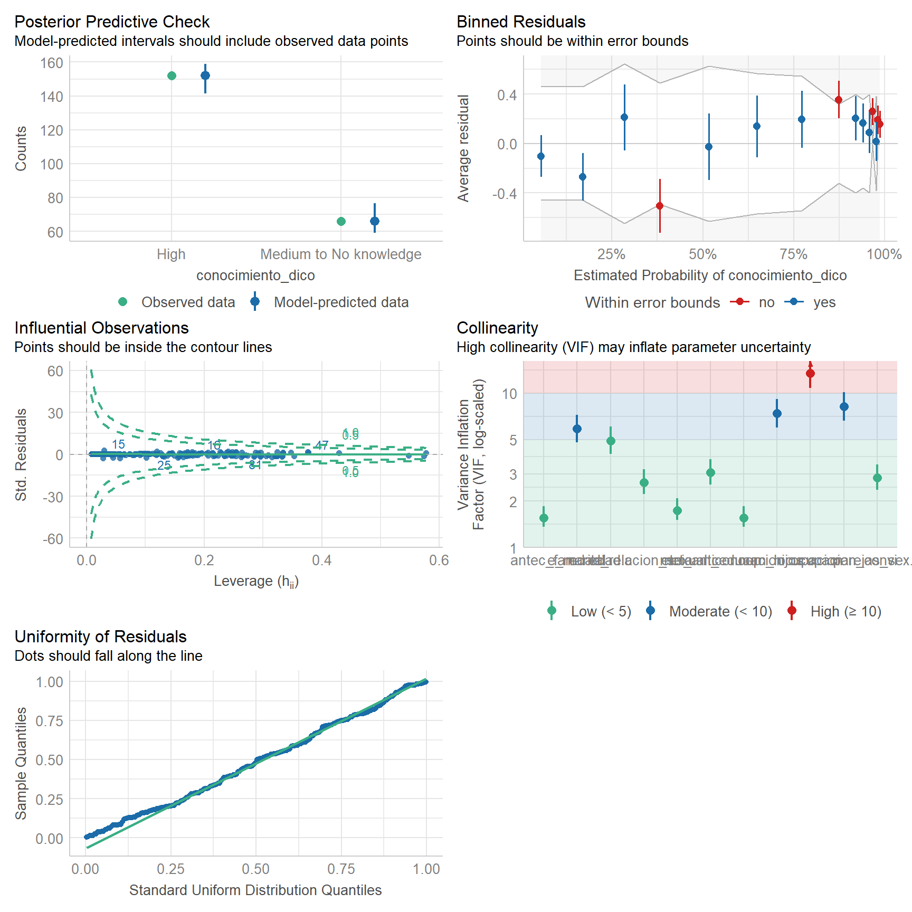
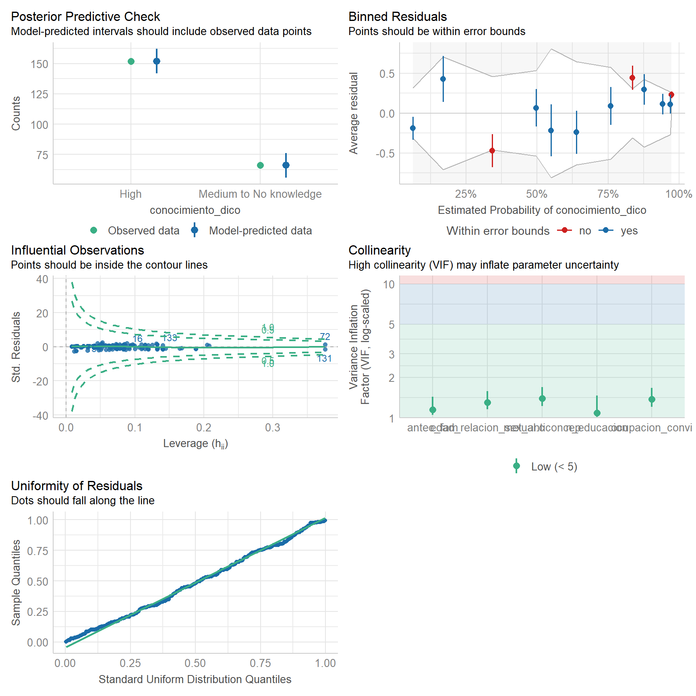
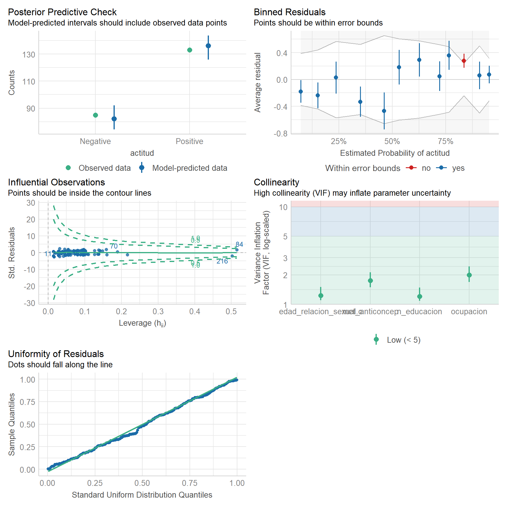
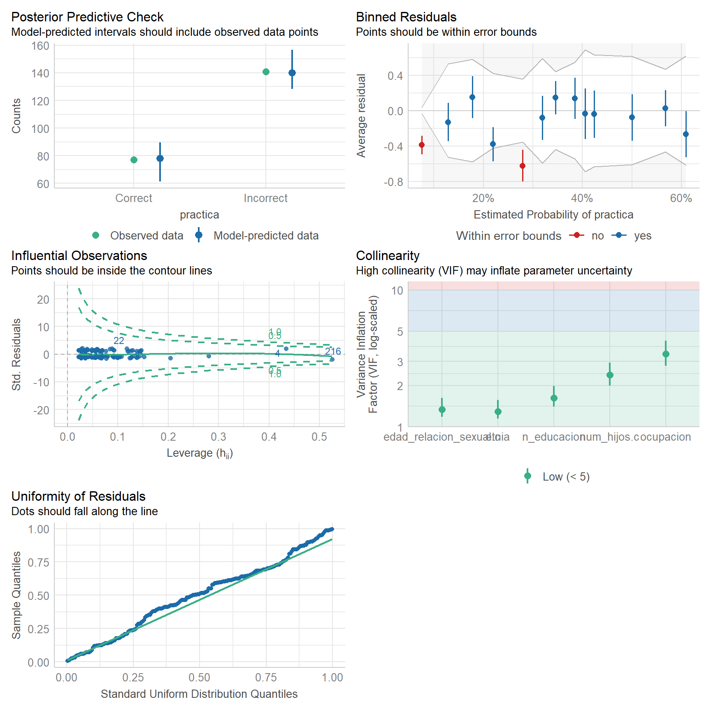

Code
pacman::p_load(
rio,
here,
tidyverse,
finalfit,
gtsummary,
flextable,
geepack,
broom,
car,
readr,
survival,
ggpubr,
ggsci,
ggstats,
bstfun,
MASS,
epiDisplay,
survey
)pacman::p_load(
rio,
here,
tidyverse,
finalfit,
gtsummary,
flextable,
geepack,
broom,
car,
readr,
survival,
ggpubr,
ggsci,
ggstats,
bstfun,
MASS,
epiDisplay,
survey
)# Data
data_factors <- rio::import(here("data", "data_factors.csv"))
# Attitudes
attitudes_data <- rio::import(here("data", "attitudes.csv"))
# Knowledges
knowledges_data <- rio::import(here("data", "knowledges.csv"))
# Practices
practices_data <- rio::import(here("data", "practices.csv"))# Set a gtsummary theme
gtsummary::theme_gtsummary_compact()Setting theme "Compact"gtsummary::theme_gtsummary_journal(journal = "jama")Setting theme "JAMA"# Set a gtsummary language
gtsummary::theme_gtsummary_language(language = "en")Setting theme "language: en"source(here::here("scripts", "dictionary.R"))data_factors_1 <-
data_factors_0 |>
dplyr::select(
# Demographics
edad,
edad.c,
procedencia,
etnia,
religion,
n_educacion,
e_marital,
ocupacion,
ocupacion_convi,
antec_fam,
# Sexual and reproductive variables
edad_relacion_sexual.c,
parejas_sex.c,
num_hijos.c,
met_anticoncep,
antec_ets,
# Need review
conocimiento,
conocimiento_dico,
actitud,
practica
)# Data
data_barplot <- data_factors_1 |>
dplyr::select(conocimiento, actitud, practica) |>
tidyr::pivot_longer(cols = everything(), names_to = "variable", values_to = "value") |>
dplyr::group_by(variable, value) |>
dplyr::summarise(n = n()) |>
dplyr::mutate(prop = n / sum(n)) |>
dplyr::mutate(percentage = round(prop * 100, 1))`summarise()` has grouped output by 'variable'. You can override using the
`.groups` argument.# Plot
figure_s1 <- ggplot2::ggplot(data_barplot, aes(x = variable, y = percentage, fill = value)) +
ggplot2::geom_bar(stat = 'identity') +
ggplot2::geom_text(aes(label = paste0(percentage, "%")), position = position_stack(vjust = 0.5)) +
ggplot2::scale_x_discrete(labels = c("Knowledge", "Attitude", "Practices")) +
ggplot2::labs(y = "Percentage", x = element_blank(), fill = "Legend") +
ggpubr::theme_pubr() +
ggplot2::theme(legend.position = "right") +
ggplot2::scale_fill_brewer(palette = "RdYlBu")
# View
figure_s1# Likertplot
figure_s2 <-ggstats::gglikert(knowledges, labels_accuracy = .1, labels_hide_below = .2)
# View
figure_s2# Likertplot
figure_s3 <- ggstats::gglikert(attitudes, labels_accuracy = .1, labels_hide_below = .2)
# View
figure_s3# Liker plot
figure_s4 <- ggstats::gglikert(practices, labels_accuracy = .1, labels_hide_below = .2) +
scale_fill_manual(values = c("#d8b365", "#5ab4ac"))Scale for fill is already present.
Adding another scale for fill, which will replace the existing scale.# View
figure_s4# Demographic characteristics
table_1.1 <-
data_factors_1 |>
tbl_summary(include = c(edad:antec_fam)) |>
modify_header(all_stat_cols() ~ "**{level}**, (n = {n})")
# Reproductive and sexual characteristics
table_1.2 <-
data_factors_1 |>
tbl_summary(include = c(edad_relacion_sexual.c:antec_ets)) |>
modify_header(all_stat_cols() ~ "**{level}**, (n = {n})")
# Stack tables
table_1 <-
tbl_stack(
list(table_1.1, table_1.2),
group_header = c("Demographics", "Reproductive and sexual")
) |>
modify_caption("**Table 1**. Characteristics of women surveyed")
# View
table_1| Characteristic | Overall, (n = 218) |
|---|---|
| Demographics | |
| Age (years), Median (IQR) | 48 (38 54) |
| Age (years), n (%) | |
| < 38 | 52 (24) |
| 38-50 | 81 (37) |
| > 50 | 85 (39) |
| Origin, n (%) | |
| Urban | 111 (51) |
| Rural | 107 (49) |
| Ethnicity, n (%) | |
| Mestizo | 163 (75) |
| White | 40 (18) |
| Other | 15 (6.9) |
| Religion, n (%) | |
| None | 6 (2.8) |
| Catholic | 180 (83) |
| Evangelical | 32 (15) |
| Education level, n (%) | |
| Primary or Secundary | 58 (27) |
| Higher than Secondary | 160 (73) |
| Marital status, n (%) | |
| Married | 94 (43) |
| Cohabiting | 68 (31) |
| Single | 49 (22) |
| Widowed | 7 (3.2) |
| Occupation, n (%) | |
| Student | 29 (13) |
| Employed | 130 (60) |
| Homemaker | 37 (17) |
| Unemployed | 3 (1.4) |
| Other | 19 (8.7) |
| Partner's occupation, n (%) | |
| Student | 14 (6.4) |
| Employed | 148 (68) |
| Unemployed | 4 (1.8) |
| Other | 52 (24) |
| Family history, n (%) | 43 (20) |
| Reproductive and sexual | |
| Age at first sexual intercourse, n (%) | |
| 18 or younger | 78 (36) |
| 19-21 | 118 (54) |
| 22 or older | 22 (10) |
| Number of sexual partners, n (%) | |
| 0 or 1 | 37 (17) |
| 2 | 106 (49) |
| 3 | 50 (23) |
| 4 or more | 25 (11) |
| Number of children, n (%) | |
| 0 | 30 (14) |
| 1 | 43 (20) |
| 2 | 70 (32) |
| 3 or more | 75 (34) |
| Contraceptive method, n (%) | |
| Not using | 65 (30) |
| Oral contraceptives | 42 (19) |
| Injection | 84 (39) |
| IUD | 16 (7.3) |
| Subdermal implant | 11 (5.0) |
| History of STIs, n (%) | 15 (6.9) |
# Demographic characteristics
table_S1.1 <-
data_factors_1 |>
tbl_summary(
include = c(edad:antec_fam),
by = conocimiento,
statistic = list(
all_continuous() ~ "{median} ({p25}, {p75})",
all_categorical() ~ "{n} ({p}%)"),
digits = list(
all_continuous() ~ c(1, 1),
all_categorical() ~ c(0, 1))) |>
add_p(test.args = all_tests("fisher.test") ~ list(simulate.p.value = TRUE)) |>
add_q(method = "holm") |>
bold_p(t = 0.05) |>
modify_header(all_stat_cols() ~ "**{level}**, (n = {n})") |>
modify_spanning_header(all_stat_cols() ~ "**Knowledge of cervical cancer**") |>
modify_footnote(all_stat_cols() ~ NA) |>
modify_header(q.value = "**Adjusted p-value**")
# Reproductive and sexual characteristics
table_S1.2 <-
data_factors_1 |>
tbl_summary(
include = c(edad_relacion_sexual.c:antec_ets),
by = conocimiento,
statistic = list(
all_continuous() ~ "{median} ({p25}, {p75})",
all_categorical() ~ "{n} ({p}%)"),
digits = list(
all_continuous() ~ c(1, 1),
all_categorical() ~ c(0, 1))) |>
add_p(test.args = all_tests("fisher.test") ~ list(simulate.p.value = TRUE)) |>
add_q(method = "holm") |>
bold_p(t = 0.05) |>
modify_header(all_stat_cols() ~ "**{level}**, (n = {n})") |>
modify_footnote(all_stat_cols() ~ NA) |>
modify_header(q.value = "**Adjusted p-value**")
# Stack tables
table_S1 <-
tbl_stack(
list(table_S1.1, table_S1.2),
group_header = c("Demographics", "Reproductive and sexual")
) |>
modify_caption("**Table S1**. Characteristics of women surveyed by level of knowledge")
# View
table_S1 | Characteristic |
Knowledge of cervical cancer
|
p-value1 | Adjusted p-value2 | ||
|---|---|---|---|---|---|
| Low/No knowledge, (n = 66) | Medium, (n = 67) | High, (n = 85) | |||
| Demographics | |||||
| Age (years), Median (Q1, Q3) | 45.5 (31.0, 57.0) | 48.0 (32.0, 53.0) | 48.0 (44.0, 53.0) | 0.42 | >0.99 |
| Age (years), n (%) | 0.002 | 0.008 | |||
| < 38 | 24 (36.4%) | 19 (28.4%) | 9 (10.6%) | ||
| 38-50 | 17 (25.8%) | 22 (32.8%) | 42 (49.4%) | ||
| > 50 | 25 (37.9%) | 26 (38.8%) | 34 (40.0%) | ||
| Origin, n (%) | 0.89 | >0.99 | |||
| Urban | 32 (48.5%) | 35 (52.2%) | 44 (51.8%) | ||
| Rural | 34 (51.5%) | 32 (47.8%) | 41 (48.2%) | ||
| Ethnicity, n (%) | 0.006 | 0.024 | |||
| Mestizo | 46 (69.7%) | 55 (82.1%) | 62 (72.9%) | ||
| White | 9 (13.6%) | 10 (14.9%) | 21 (24.7%) | ||
| Other | 11 (16.7%) | 2 (3.0%) | 2 (2.4%) | ||
| Religion, n (%) | 0.47 | >0.99 | |||
| None | 1 (1.5%) | 4 (6.0%) | 1 (1.2%) | ||
| Catholic | 56 (84.8%) | 52 (77.6%) | 72 (84.7%) | ||
| Evangelical | 9 (13.6%) | 11 (16.4%) | 12 (14.1%) | ||
| Education level, n (%) | <0.001 | <0.001 | |||
| Primary or Secundary | 37 (56.1%) | 13 (19.4%) | 8 (9.4%) | ||
| Higher than Secondary | 29 (43.9%) | 54 (80.6%) | 77 (90.6%) | ||
| Marital status, n (%) | <0.001 | 0.004 | |||
| Married | 16 (24.2%) | 32 (47.8%) | 46 (54.1%) | ||
| Cohabiting | 21 (31.8%) | 17 (25.4%) | 30 (35.3%) | ||
| Single | 24 (36.4%) | 17 (25.4%) | 8 (9.4%) | ||
| Widowed | 5 (7.6%) | 1 (1.5%) | 1 (1.2%) | ||
| Occupation, n (%) | <0.001 | 0.004 | |||
| Student | 12 (18.2%) | 9 (13.4%) | 8 (9.4%) | ||
| Employed | 20 (30.3%) | 42 (62.7%) | 68 (80.0%) | ||
| Homemaker | 22 (33.3%) | 9 (13.4%) | 6 (7.1%) | ||
| Unemployed | 2 (3.0%) | 1 (1.5%) | 0 (0.0%) | ||
| Other | 10 (15.2%) | 6 (9.0%) | 3 (3.5%) | ||
| Partner's occupation, n (%) | <0.001 | 0.004 | |||
| Student | 7 (10.6%) | 3 (4.5%) | 4 (4.7%) | ||
| Employed | 26 (39.4%) | 46 (68.7%) | 76 (89.4%) | ||
| Unemployed | 2 (3.0%) | 2 (3.0%) | 0 (0.0%) | ||
| Other | 31 (47.0%) | 16 (23.9%) | 5 (5.9%) | ||
| Family history, n (%) | 27 (40.9%) | 10 (14.9%) | 6 (7.1%) | <0.001 | <0.001 |
| Reproductive and sexual | |||||
| Age at first sexual intercourse, n (%) | <0.001 | 0.002 | |||
| 18 or younger | 33 (50.0%) | 25 (37.3%) | 20 (23.5%) | ||
| 19-21 | 23 (34.8%) | 35 (52.2%) | 60 (70.6%) | ||
| 22 or older | 10 (15.2%) | 7 (10.4%) | 5 (5.9%) | ||
| Number of sexual partners, n (%) | <0.001 | <0.001 | |||
| 0 or 1 | 18 (27.3%) | 13 (19.4%) | 6 (7.1%) | ||
| 2 | 23 (34.8%) | 32 (47.8%) | 51 (60.0%) | ||
| 3 | 12 (18.2%) | 11 (16.4%) | 27 (31.8%) | ||
| 4 or more | 13 (19.7%) | 11 (16.4%) | 1 (1.2%) | ||
| Number of children, n (%) | 0.002 | 0.002 | |||
| 0 | 14 (21.2%) | 11 (16.4%) | 5 (5.9%) | ||
| 1 | 10 (15.2%) | 11 (16.4%) | 22 (25.9%) | ||
| 2 | 12 (18.2%) | 29 (43.3%) | 29 (34.1%) | ||
| 3 or more | 30 (45.5%) | 16 (23.9%) | 29 (34.1%) | ||
| Contraceptive method, n (%) | <0.001 | 0.002 | |||
| Not using | 29 (43.9%) | 21 (31.3%) | 15 (17.6%) | ||
| Oral contraceptives | 5 (7.6%) | 15 (22.4%) | 22 (25.9%) | ||
| Injection | 13 (19.7%) | 26 (38.8%) | 45 (52.9%) | ||
| IUD | 12 (18.2%) | 2 (3.0%) | 2 (2.4%) | ||
| Subdermal implant | 7 (10.6%) | 3 (4.5%) | 1 (1.2%) | ||
| History of STIs, n (%) | 11 (16.7%) | 4 (6.0%) | 0 (0.0%) | <0.001 | 0.002 |
| 1 Kruskal-Wallis rank sum test; Pearsons Chi-squared test; Fishers Exact Test for Count Data with simulated p-value (based on 2000 replicates) | |||||
| 2 Holm correction for multiple testing | |||||
# Demographic characteristics
table_S2.1 <-
data_factors_1 |>
tbl_summary(
include = c(edad:antec_fam),
by = conocimiento_dico,
statistic = list(
all_continuous() ~ "{median} ({p25}, {p75})",
all_categorical() ~ "{n} ({p}%)"),
digits = list(
all_continuous() ~ c(1, 1),
all_categorical() ~ c(0, 1))) |>
add_p() |>
bold_p(t=0.05) |>
modify_header(all_stat_cols() ~ "**{level}**, (n = {n})") |>
modify_spanning_header(all_stat_cols() ~ "**Knowledge of cervical cancer**") |>
modify_footnote(all_stat_cols() ~ NA)
# Reproductive and sexual characteristics
table_S2.2 <-
data_factors_1 |>
tbl_summary(
include = c(edad_relacion_sexual.c:antec_ets),
by = conocimiento_dico,
statistic = list(
all_continuous() ~ "{median} ({p25}, {p75})",
all_categorical() ~ "{n} ({p}%)"),
digits = list(
all_continuous() ~ c(1, 1),
all_categorical() ~ c(0, 1))) |>
add_p() |>
bold_p(t = 0.05) |>
modify_header(all_stat_cols() ~ "**{level}**, (n = {n})") |>
modify_footnote(all_stat_cols() ~ NA)
# Stack tables
table_S2 <-
tbl_stack(
list(table_S2.1, table_S2.2),
group_header = c("Demographics", "Reproductive and sexual")
) |>
modify_caption(
"**Table S2**. Characteristics of women surveyed by level of knowledge (two categories)")
# View
table_S2| Characteristic |
Knowledge of cervical cancer
|
p-value1 | |
|---|---|---|---|
| Medium to No knowledge, (n = 66) | High, (n = 152) | ||
| Demographics | |||
| Age (years), Median (Q1, Q3) | 45.5 (31.0, 57.0) | 48.0 (42.0, 53.0) | 0.54 |
| Age (years), n (%) | 0.008 | ||
| < 38 | 24 (36.4%) | 28 (18.4%) | |
| 38-50 | 17 (25.8%) | 64 (42.1%) | |
| > 50 | 25 (37.9%) | 60 (39.5%) | |
| Origin, n (%) | 0.64 | ||
| Urban | 32 (48.5%) | 79 (52.0%) | |
| Rural | 34 (51.5%) | 73 (48.0%) | |
| Ethnicity, n (%) | 0.001 | ||
| Mestizo | 46 (69.7%) | 117 (77.0%) | |
| White | 9 (13.6%) | 31 (20.4%) | |
| Other | 11 (16.7%) | 4 (2.6%) | |
| Religion, n (%) | 0.84 | ||
| None | 1 (1.5%) | 5 (3.3%) | |
| Catholic | 56 (84.8%) | 124 (81.6%) | |
| Evangelical | 9 (13.6%) | 23 (15.1%) | |
| Education level, n (%) | <0.001 | ||
| Primary or Secundary | 37 (56.1%) | 21 (13.8%) | |
| Higher than Secondary | 29 (43.9%) | 131 (86.2%) | |
| Marital status, n (%) | <0.001 | ||
| Married | 16 (24.2%) | 78 (51.3%) | |
| Cohabiting | 21 (31.8%) | 47 (30.9%) | |
| Single | 24 (36.4%) | 25 (16.4%) | |
| Widowed | 5 (7.6%) | 2 (1.3%) | |
| Occupation, n (%) | <0.001 | ||
| Student | 12 (18.2%) | 17 (11.2%) | |
| Employed | 20 (30.3%) | 110 (72.4%) | |
| Homemaker | 22 (33.3%) | 15 (9.9%) | |
| Unemployed | 2 (3.0%) | 1 (0.7%) | |
| Other | 10 (15.2%) | 9 (5.9%) | |
| Partner's occupation, n (%) | <0.001 | ||
| Student | 7 (10.6%) | 7 (4.6%) | |
| Employed | 26 (39.4%) | 122 (80.3%) | |
| Unemployed | 2 (3.0%) | 2 (1.3%) | |
| Other | 31 (47.0%) | 21 (13.8%) | |
| Family history, n (%) | 27 (40.9%) | 16 (10.5%) | <0.001 |
| Reproductive and sexual | |||
| Age at first sexual intercourse, n (%) | <0.001 | ||
| 18 or younger | 33 (50.0%) | 45 (29.6%) | |
| 19-21 | 23 (34.8%) | 95 (62.5%) | |
| 22 or older | 10 (15.2%) | 12 (7.9%) | |
| Number of sexual partners, n (%) | 0.001 | ||
| 0 or 1 | 18 (27.3%) | 19 (12.5%) | |
| 2 | 23 (34.8%) | 83 (54.6%) | |
| 3 | 12 (18.2%) | 38 (25.0%) | |
| 4 or more | 13 (19.7%) | 12 (7.9%) | |
| Number of children, n (%) | 0.003 | ||
| 0 | 14 (21.2%) | 16 (10.5%) | |
| 1 | 10 (15.2%) | 33 (21.7%) | |
| 2 | 12 (18.2%) | 58 (38.2%) | |
| 3 or more | 30 (45.5%) | 45 (29.6%) | |
| Contraceptive method, n (%) | <0.001 | ||
| Not using | 29 (43.9%) | 36 (23.7%) | |
| Oral contraceptives | 5 (7.6%) | 37 (24.3%) | |
| Injection | 13 (19.7%) | 71 (46.7%) | |
| IUD | 12 (18.2%) | 4 (2.6%) | |
| Subdermal implant | 7 (10.6%) | 4 (2.6%) | |
| History of STIs, n (%) | 11 (16.7%) | 4 (2.6%) | <0.001 |
| 1 Wilcoxon rank sum test; Pearsons Chi-squared test; Fishers exact test | |||
# Demographic characteristics
table_S3.1 <-
data_factors_1 |>
tbl_summary(
include = c(edad:antec_fam),
by = actitud,
statistic = list(
all_continuous() ~ "{median} ({p25}, {p75})",
all_categorical() ~ "{n} ({p}%)"),
digits = list(
all_continuous() ~ c(1, 1),
all_categorical() ~ c(0, 1))) |>
add_p() |>
bold_p(t=0.05) |>
modify_header(all_stat_cols() ~ "**{level}**, (n = {n})") |>
modify_spanning_header(all_stat_cols() ~ "**Attitudes toward cervix cancer**") |>
modify_footnote(all_stat_cols() ~ NA)
# Reproductive and sexual characteristics
table_S3.2 <-
data_factors_1 |>
tbl_summary(
include = c(edad_relacion_sexual.c:antec_ets),
by = actitud,
statistic = list(
all_continuous() ~ "{median} ({p25}, {p75})",
all_categorical() ~ "{n} ({p}%)"),
digits = list(
all_continuous() ~ c(1, 1),
all_categorical() ~ c(0, 1))) |>
add_p() |>
bold_p(t = 0.05) |>
modify_header(all_stat_cols() ~ "**{level}**, (n = {n})") |>
modify_footnote(all_stat_cols() ~ NA)
# Stack tables
table_S3 <-
tbl_stack(
list(table_S3.1, table_S3.2),
group_header = c("Demographics", "Reproductive and sexual")
) |>
modify_caption(
"Table S3. Characteristics of women surveyed by level of attitudes")
# View
table_S3| Characteristic |
Attitudes toward cervix cancer
|
p-value1 | |
|---|---|---|---|
| Negative, (n = 85) | Positive, (n = 133) | ||
| Demographics | |||
| Age (years), Median (Q1, Q3) | 48.0 (35.0, 54.0) | 48.0 (41.0, 54.0) | 0.97 |
| Age (years), n (%) | 0.67 | ||
| < 38 | 23 (27.1%) | 29 (21.8%) | |
| 38-50 | 30 (35.3%) | 51 (38.3%) | |
| > 50 | 32 (37.6%) | 53 (39.8%) | |
| Origin, n (%) | 0.63 | ||
| Urban | 45 (52.9%) | 66 (49.6%) | |
| Rural | 40 (47.1%) | 67 (50.4%) | |
| Ethnicity, n (%) | 0.045 | ||
| Mestizo | 63 (74.1%) | 100 (75.2%) | |
| White | 12 (14.1%) | 28 (21.1%) | |
| Other | 10 (11.8%) | 5 (3.8%) | |
| Religion, n (%) | 0.95 | ||
| None | 2 (2.4%) | 4 (3.0%) | |
| Catholic | 70 (82.4%) | 110 (82.7%) | |
| Evangelical | 13 (15.3%) | 19 (14.3%) | |
| Education level, n (%) | <0.001 | ||
| Primary or Secundary | 39 (45.9%) | 19 (14.3%) | |
| Higher than Secondary | 46 (54.1%) | 114 (85.7%) | |
| Marital status, n (%) | 0.15 | ||
| Married | 34 (40.0%) | 60 (45.1%) | |
| Cohabiting | 23 (27.1%) | 45 (33.8%) | |
| Single | 23 (27.1%) | 26 (19.5%) | |
| Widowed | 5 (5.9%) | 2 (1.5%) | |
| Occupation, n (%) | <0.001 | ||
| Student | 11 (12.9%) | 18 (13.5%) | |
| Employed | 31 (36.5%) | 99 (74.4%) | |
| Homemaker | 31 (36.5%) | 6 (4.5%) | |
| Unemployed | 1 (1.2%) | 2 (1.5%) | |
| Other | 11 (12.9%) | 8 (6.0%) | |
| Partner's occupation, n (%) | <0.001 | ||
| Student | 5 (5.9%) | 9 (6.8%) | |
| Employed | 44 (51.8%) | 104 (78.2%) | |
| Unemployed | 1 (1.2%) | 3 (2.3%) | |
| Other | 35 (41.2%) | 17 (12.8%) | |
| Family history, n (%) | 26 (30.6%) | 17 (12.8%) | 0.001 |
| Reproductive and sexual | |||
| Age at first sexual intercourse, n (%) | <0.001 | ||
| 18 or younger | 41 (48.2%) | 37 (27.8%) | |
| 19-21 | 31 (36.5%) | 87 (65.4%) | |
| 22 or older | 13 (15.3%) | 9 (6.8%) | |
| Number of sexual partners, n (%) | 0.002 | ||
| 0 or 1 | 24 (28.2%) | 13 (9.8%) | |
| 2 | 33 (38.8%) | 73 (54.9%) | |
| 3 | 16 (18.8%) | 34 (25.6%) | |
| 4 or more | 12 (14.1%) | 13 (9.8%) | |
| Number of children, n (%) | 0.014 | ||
| 0 | 12 (14.1%) | 18 (13.5%) | |
| 1 | 16 (18.8%) | 27 (20.3%) | |
| 2 | 18 (21.2%) | 52 (39.1%) | |
| 3 or more | 39 (45.9%) | 36 (27.1%) | |
| Contraceptive method, n (%) | <0.001 | ||
| Not using | 36 (42.4%) | 29 (21.8%) | |
| Oral contraceptives | 4 (4.7%) | 38 (28.6%) | |
| Injection | 26 (30.6%) | 58 (43.6%) | |
| IUD | 11 (12.9%) | 5 (3.8%) | |
| Subdermal implant | 8 (9.4%) | 3 (2.3%) | |
| History of STIs, n (%) | 9 (10.6%) | 6 (4.5%) | 0.084 |
| 1 Wilcoxon rank sum test; Pearsons Chi-squared test; Fishers exact test | |||
# Demographic characteristics
table_S4.1 <-
data_factors_1 |>
tbl_summary(
include = c(edad:antec_fam),
by = practica,
statistic = list(
all_continuous() ~ "{median} ({p25}, {p75})",
all_categorical() ~ "{n} ({p}%)"),
digits = list(
all_continuous() ~ c(1, 1),
all_categorical() ~ c(0, 1))) |>
add_p() |>
bold_p(t=0.05) |>
modify_header(all_stat_cols() ~ "**{level}**, (n = {n})") |>
modify_spanning_header(all_stat_cols() ~ "**Practices regarding cervix cancer**") |>
modify_footnote(all_stat_cols() ~ NA)
# Reproductive and sexual characteristics
table_S4.2 <-
data_factors_1 |>
tbl_summary(
include = c(edad_relacion_sexual.c:antec_ets),
by = practica,
statistic = list(
all_continuous() ~ "{median} ({p25}, {p75})",
all_categorical() ~ "{n} ({p}%)"),
digits = list(
all_continuous() ~ c(1, 1),
all_categorical() ~ c(0, 1))) |>
add_p() |>
bold_p(t=0.05) |>
modify_header(all_stat_cols() ~ "**{level}**, (n = {n})") |>
modify_footnote(all_stat_cols() ~ NA)
# stack tables
table_S4 <-
tbl_stack(
list(table_S4.1, table_S4.2),
group_header = c("Demographics", "Reproductive and sexual")
) |>
modify_caption(
"**Table S4**. Characteristics of women surveyed by level of practices")
# View
table_S4| Characteristic |
Practices regarding cervix cancer
|
p-value1 | |
|---|---|---|---|
| Incorrect, (n = 141) | Correct, (n = 77) | ||
| Demographics | |||
| Age (years), Median (Q1, Q3) | 47.0 (35.0, 54.0) | 49.0 (42.0, 54.0) | 0.32 |
| Age (years), n (%) | 0.14 | ||
| < 38 | 39 (27.7%) | 13 (16.9%) | |
| 38-50 | 47 (33.3%) | 34 (44.2%) | |
| > 50 | 55 (39.0%) | 30 (39.0%) | |
| Origin, n (%) | 0.82 | ||
| Urban | 71 (50.4%) | 40 (51.9%) | |
| Rural | 70 (49.6%) | 37 (48.1%) | |
| Ethnicity, n (%) | 0.50 | ||
| Mestizo | 103 (73.0%) | 60 (77.9%) | |
| White | 29 (20.6%) | 11 (14.3%) | |
| Other | 9 (6.4%) | 6 (7.8%) | |
| Religion, n (%) | 0.29 | ||
| None | 2 (1.4%) | 4 (5.2%) | |
| Catholic | 117 (83.0%) | 63 (81.8%) | |
| Evangelical | 22 (15.6%) | 10 (13.0%) | |
| Education level, n (%) | 0.26 | ||
| Primary or Secundary | 41 (29.1%) | 17 (22.1%) | |
| Higher than Secondary | 100 (70.9%) | 60 (77.9%) | |
| Marital status, n (%) | 0.16 | ||
| Married | 56 (39.7%) | 38 (49.4%) | |
| Cohabiting | 42 (29.8%) | 26 (33.8%) | |
| Single | 38 (27.0%) | 11 (14.3%) | |
| Widowed | 5 (3.5%) | 2 (2.6%) | |
| Occupation, n (%) | 0.92 | ||
| Student | 21 (14.9%) | 8 (10.4%) | |
| Employed | 83 (58.9%) | 47 (61.0%) | |
| Homemaker | 23 (16.3%) | 14 (18.2%) | |
| Unemployed | 2 (1.4%) | 1 (1.3%) | |
| Other | 12 (8.5%) | 7 (9.1%) | |
| Partner's occupation, n (%) | 0.049 | ||
| Student | 12 (8.5%) | 2 (2.6%) | |
| Employed | 87 (61.7%) | 61 (79.2%) | |
| Unemployed | 3 (2.1%) | 1 (1.3%) | |
| Other | 39 (27.7%) | 13 (16.9%) | |
| Family history, n (%) | 29 (20.6%) | 14 (18.2%) | 0.67 |
| Reproductive and sexual | |||
| Age at first sexual intercourse, n (%) | 0.020 | ||
| 18 or younger | 54 (38.3%) | 24 (31.2%) | |
| 19-21 | 68 (48.2%) | 50 (64.9%) | |
| 22 or older | 19 (13.5%) | 3 (3.9%) | |
| Number of sexual partners, n (%) | 0.41 | ||
| 0 or 1 | 28 (19.9%) | 9 (11.7%) | |
| 2 | 64 (45.4%) | 42 (54.5%) | |
| 3 | 33 (23.4%) | 17 (22.1%) | |
| 4 or more | 16 (11.3%) | 9 (11.7%) | |
| Number of children, n (%) | 0.058 | ||
| 0 | 23 (16.3%) | 7 (9.1%) | |
| 1 | 23 (16.3%) | 20 (26.0%) | |
| 2 | 51 (36.2%) | 19 (24.7%) | |
| 3 or more | 44 (31.2%) | 31 (40.3%) | |
| Contraceptive method, n (%) | 0.74 | ||
| Not using | 42 (29.8%) | 23 (29.9%) | |
| Oral contraceptives | 26 (18.4%) | 16 (20.8%) | |
| Injection | 55 (39.0%) | 29 (37.7%) | |
| IUD | 9 (6.4%) | 7 (9.1%) | |
| Subdermal implant | 9 (6.4%) | 2 (2.6%) | |
| History of STIs, n (%) | 10 (7.1%) | 5 (6.5%) | 0.87 |
| 1 Wilcoxon rank sum test; Pearsons Chi-squared test; Fishers exact test | |||
data_uv <-
data_factors_1 |>
dplyr::select(
edad.c:antec_ets,
conocimiento_dico,
actitud,
practica,
conocimiento
)table_S5.1 <- data_uv |>
tbl_uvregression(
include = c(
edad.c,
etnia,
n_educacion,
e_marital,
ocupacion,
ocupacion_convi,
antec_fam,
edad_relacion_sexual.c,
parejas_sex.c,
num_hijos.c,
met_anticoncep
),
y = conocimiento_dico,
method = glm,
method.args = list(family = binomial(link = "logit")),
exponentiate = TRUE,
conf.int = TRUE,
hide_n = TRUE,
tidy_fun = broom.helpers::tidy_parameters,
add_estimate_to_reference_rows = FALSE,
pvalue_fun = ~ style_pvalue(.x, digits = 3),
estimate_fun = ~ style_number(.x, digits = 2)
) |>
bold_p(t = 0.05)table_S5.2 <- data_uv |>
tbl_uvregression(
include = c(
edad.c,
etnia,
n_educacion,
e_marital,
ocupacion,
ocupacion_convi,
antec_fam,
edad_relacion_sexual.c,
parejas_sex.c,
num_hijos.c,
met_anticoncep
),
y = actitud,
method = glm,
method.args = list(family = binomial(link = "logit")),
exponentiate = TRUE,
conf.int = TRUE,
hide_n = TRUE,
tidy_fun = broom.helpers::tidy_parameters,
add_estimate_to_reference_rows = FALSE,
pvalue_fun = ~ style_pvalue(.x, digits = 3),
estimate_fun = ~ style_number(.x, digits = 2)
) |>
bold_p(t = 0.05)table_S5.3 <- data_uv |>
tbl_uvregression(
include = c(
edad.c,
etnia,
n_educacion,
e_marital,
ocupacion,
ocupacion_convi,
antec_fam,
edad_relacion_sexual.c,
parejas_sex.c,
num_hijos.c,
met_anticoncep
),
y = practica,
method = glm,
method.args = list(family = binomial(link = "logit")),
exponentiate = TRUE,
conf.int = TRUE,
hide_n = TRUE,
tidy_fun = broom.helpers::tidy_parameters,
add_estimate_to_reference_rows = FALSE,
pvalue_fun = ~ style_pvalue(.x, digits = 3),
estimate_fun = ~ style_number(.x, digits = 2)
) |>
bold_p(t = 0.05)# Merge tables
table_S5 <- tbl_merge(
tbls =
list(table_S5.1, table_S5.2, table_S5.3),
tab_spanner = c("**Knowleges**", "**Attitudes**", "**Practices**")
)
# View
table_S5 | Characteristic |
Knowleges
|
Attitudes
|
Practices
|
|||
|---|---|---|---|---|---|---|
| OR (95% CI)1 | p-value | OR (95% CI)1 | p-value | OR (95% CI)1 | p-value | |
| Age (years) | ||||||
| < 38 | ||||||
| 38-50 | 3.23 (1.52 to 7.03) | 0.003 | 1.35 (0.66 to 2.75) | 0.409 | 2.17 (1.02 to 4.79) | 0.048 |
| > 50 | 2.06 (1.01 to 4.24) | 0.049 | 1.31 (0.65 to 2.65) | 0.446 | 1.64 (0.77 to 3.62) | 0.210 |
| Ethnicity | ||||||
| Mestizo | ||||||
| White | 1.35 (0.62 to 3.22) | 0.467 | 1.47 (0.71 to 3.20) | 0.312 | 0.65 (0.29 to 1.37) | 0.271 |
| Other | 0.14 (0.04 to 0.44) | 0.001 | 0.32 (0.09 to 0.93) | 0.043 | 1.14 (0.37 to 3.33) | 0.807 |
| Education level | ||||||
| Primary or Secundary | ||||||
| Higher than Secondary | 7.96 (4.13 to 15.81) | <0.001 | 5.09 (2.70 to 9.88) | <0.001 | 1.45 (0.77 to 2.82) | 0.265 |
| Marital status | ||||||
| Married | ||||||
| Cohabiting | 0.46 (0.22 to 0.96) | 0.040 | 1.11 (0.58 to 2.15) | 0.758 | 0.91 (0.48 to 1.73) | 0.778 |
| Single | 0.21 (0.10 to 0.46) | <0.001 | 0.64 (0.32 to 1.29) | 0.213 | 0.43 (0.19 to 0.92) | 0.034 |
| Widowed | 0.08 (0.01 to 0.42) | 0.005 | 0.23 (0.03 to 1.11) | 0.086 | 0.59 (0.08 to 2.89) | 0.540 |
| Occupation | ||||||
| Student | ||||||
| Employed | 3.88 (1.60 to 9.38) | 0.002 | 1.95 (0.81 to 4.54) | 0.124 | 1.49 (0.63 to 3.81) | 0.382 |
| Homemaker | 0.48 (0.18 to 1.28) | 0.147 | 0.12 (0.03 to 0.36) | <0.001 | 1.60 (0.57 to 4.72) | 0.382 |
| Unemployed | 0.35 (0.02 to 4.09) | 0.416 | 1.22 (0.10 to 28.13) | 0.876 | 1.31 (0.06 to 15.67) | 0.833 |
| Other | 0.64 (0.19 to 2.03) | 0.445 | 0.44 (0.13 to 1.43) | 0.178 | 1.53 (0.44 to 5.35) | 0.500 |
| Partner's occupation | ||||||
| Student | ||||||
| Employed | 4.69 (1.49 to 14.85) | 0.007 | 1.31 (0.39 to 4.03) | 0.642 | 4.21 (1.10 to 27.66) | 0.066 |
| Unemployed | 1.00 (0.10 to 10.38) | >0.999 | 1.67 (0.16 to 38.82) | 0.690 | 2.00 (0.08 to 29.55) | 0.617 |
| Other | 0.68 (0.20 to 2.25) | 0.519 | 0.27 (0.07 to 0.90) | 0.038 | 2.00 (0.46 to 13.95) | 0.403 |
| Family history | ||||||
| Yes | ||||||
| No | 5.88 (2.92 to 12.24) | <0.001 | 3.01 (1.52 to 6.07) | 0.002 | 1.17 (0.58 to 2.42) | 0.672 |
| Age at first sexual intercourse | ||||||
| 18 or younger | ||||||
| 19-21 | 3.03 (1.61 to 5.80) | <0.001 | 3.11 (1.71 to 5.74) | <0.001 | 1.65 (0.91 to 3.06) | 0.102 |
| 22 or older | 0.88 (0.34 to 2.32) | 0.792 | 0.77 (0.29 to 1.99) | 0.588 | 0.36 (0.08 to 1.17) | 0.121 |
| Number of sexual partners | ||||||
| 0 or 1 | ||||||
| 2 | 3.42 (1.55 to 7.63) | 0.002 | 4.08 (1.88 to 9.22) | <0.001 | 2.04 (0.90 to 4.98) | 0.098 |
| 3 | 3.00 (1.22 to 7.66) | 0.019 | 3.92 (1.63 to 9.90) | 0.003 | 1.60 (0.63 to 4.29) | 0.332 |
| 4 or more | 0.87 (0.31 to 2.42) | 0.796 | 2.00 (0.71 to 5.73) | 0.189 | 1.75 (0.57 to 5.39) | 0.323 |
| Number of children | ||||||
| 0 | ||||||
| 1 | 2.89 (1.07 to 8.12) | 0.039 | 1.13 (0.43 to 2.94) | 0.809 | 2.86 (1.05 to 8.49) | 0.047 |
| 2 | 4.23 (1.65 to 11.16) | 0.003 | 1.93 (0.77 to 4.78) | 0.156 | 1.22 (0.47 to 3.50) | 0.691 |
| 3 or more | 1.31 (0.56 to 3.09) | 0.532 | 0.62 (0.26 to 1.44) | 0.268 | 2.31 (0.92 to 6.44) | 0.088 |
| Contraceptive method | ||||||
| Not using | ||||||
| Oral contraceptives | 5.96 (2.23 to 19.05) | <0.001 | 11.79 (4.15 to 42.77) | <0.001 | 1.12 (0.50 to 2.51) | 0.776 |
| Injection | 4.40 (2.08 to 9.73) | <0.001 | 2.77 (1.42 to 5.49) | 0.003 | 0.96 (0.49 to 1.91) | 0.913 |
| IUD | 0.27 (0.07 to 0.86) | 0.037 | 0.56 (0.16 to 1.74) | 0.336 | 1.42 (0.45 to 4.32) | 0.536 |
| Subdermal implant | 0.46 (0.11 to 1.68) | 0.250 | 0.47 (0.10 to 1.77) | 0.289 | 0.41 (0.06 to 1.74) | 0.274 |
| 1 OR = Odds Ratio, CI = Confidence Interval | ||||||
mv_reg_know <- glm(
conocimiento_dico ~
edad.c + etnia + n_educacion + e_marital + ocupacion + ocupacion_convi +
antec_fam + edad_relacion_sexual.c + parejas_sex.c + num_hijos.c +
met_anticoncep,
family = binomial(link = "logit"),
data = data_uv
)
# Summary with Wald and LRT p-values
epiDisplay::logistic.display(mv_reg_know, simplified = FALSE, crude = FALSE)
Logistic regression predicting conocimiento_dico : High vs Medium to No knowledge
adj. OR(95%CI)
edad.c: ref.=< 38
38-50 1.86 (0.35,9.91)
> 50 1.25 (0.2,7.8)
etnia: ref.=Mestizo
White 0.53 (0.15,1.93)
Other 0.27 (0.06,1.24)
n_educacion: Higher than Secondary vs Primary or Secundary 4.61 (1.62,13.1)
e_marital: ref.=Married
Cohabiting 0.7 (0.2,2.45)
Single 0.61 (0.11,3.51)
Widowed 0.45 (0.03,5.85)
ocupacion: ref.=Student
Employed 0.81 (0.14,4.8)
Homemaker 0.39 (0.07,2.31)
Unemployed 1.02 (0.01,81.61)
Other 1.36 (0.19,9.69)
_conviEmployed 4.14 (0.54,31.8)
_conviUnemployed 3.05 (0.08,116.63)
_conviOther 1.08 (0.19,6.06)
ocupacion_convi: ref.=Student
Employed 4.14 (0.54,31.8)
Unemployed 3.05 (0.08,116.63)
Other 1.08 (0.19,6.06)
antec_fam: No vs Yes 5.65 (1.79,17.79)
edad_relacion_sexual.c: ref.=18 or younger
19-21 1.16 (0.38,3.56)
22 or older 0.58 (0.11,2.95)
parejas_sex.c: ref.=0 or 1
2 0.91 (0.26,3.18)
3 0.79 (0.16,3.86)
4 or more 0.6 (0.13,2.71)
num_hijos.c: ref.=0
1 2.79 (0.4,19.39)
2 2.13 (0.34,13.39)
3 or more 0.84 (0.1,7.02)
met_anticoncep: ref.=Not using
Oral contraceptives 1.29 (0.28,6.03)
Injection 2.03 (0.62,6.63)
IUD 0.14 (0.02,0.87)
Subdermal implant 0.22 (0.03,1.46)
P(Wald's test)
edad.c: ref.=< 38
38-50 0.467
> 50 0.811
etnia: ref.=Mestizo
White 0.339
Other 0.092
n_educacion: Higher than Secondary vs Primary or Secundary 0.004
e_marital: ref.=Married
Cohabiting 0.573
Single 0.582
Widowed 0.541
ocupacion: ref.=Student
Employed 0.814
Homemaker 0.299
Unemployed 0.994
Other 0.761
_conviEmployed 0.172
_conviUnemployed 0.548
_conviOther 0.932
ocupacion_convi: ref.=Student
Employed 0.172
Unemployed 0.548
Other 0.932
antec_fam: No vs Yes 0.003
edad_relacion_sexual.c: ref.=18 or younger
19-21 0.794
22 or older 0.512
parejas_sex.c: ref.=0 or 1
2 0.883
3 0.774
4 or more 0.51
num_hijos.c: ref.=0
1 0.3
2 0.42
3 or more 0.87
met_anticoncep: ref.=Not using
Oral contraceptives 0.742
Injection 0.24
IUD 0.035
Subdermal implant 0.118
P(LR-test)
edad.c: ref.=< 38 0.659
38-50
> 50
etnia: ref.=Mestizo 0.194
White
Other
n_educacion: Higher than Secondary vs Primary or Secundary 0.003
e_marital: ref.=Married 0.89
Cohabiting
Single
Widowed
ocupacion: ref.=Student 0.702
Employed
Homemaker
Unemployed
Other
_conviEmployed
_conviUnemployed
_conviOther
ocupacion_convi: ref.=Student 0.284
Employed
Unemployed
Other
antec_fam: No vs Yes 0.002
edad_relacion_sexual.c: ref.=18 or younger 0.662
19-21
22 or older
parejas_sex.c: ref.=0 or 1 0.917
2
3
4 or more
num_hijos.c: ref.=0 0.238
1
2
3 or more
met_anticoncep: ref.=Not using 0.008
Oral contraceptives
Injection
IUD
Subdermal implant
Log-likelihood = -75.9703
No. of observations = 218
AIC value = 209.9405# Visual check of model assumptions
performance::check_model(mv_reg_know)
# Indices of model performance
performance::model_performance(mv_reg_know)# Indices of model performance
AIC | AICc | BIC | Tjur's R2 | RMSE | Sigma | Log_loss | Score_log
------------------------------------------------------------------------------
209.941 | 219.196 | 308.091 | 0.492 | 0.325 | 1.000 | 0.348 | -306.638
AIC | Score_spherical | PCP
---------------------------------
209.941 | 0.006 | 0.785# Check for multicollinearity
performance::check_collinearity(mv_reg_know, ci = NULL)# Check for Multicollinearity
Low Correlation
Term VIF Increased SE Tolerance
edad.c 4.91 2.22 0.20
etnia 1.74 1.32 0.58
n_educacion 1.55 1.25 0.65
antec_fam 1.55 1.24 0.65
edad_relacion_sexual.c 2.64 1.62 0.38
parejas_sex.c 2.82 1.68 0.35
met_anticoncep 3.06 1.75 0.33
Moderate Correlation
Term VIF Increased SE Tolerance
e_marital 5.87 2.42 0.17
ocupacion_convi 8.18 2.86 0.12
num_hijos.c 7.39 2.72 0.14
High Correlation
Term VIF Increased SE Tolerance
ocupacion 13.43 3.66 0.07mv_reg_know |>
MASS::stepAIC(direction = "both", trace = FALSE)
Call: glm(formula = conocimiento_dico ~ n_educacion + ocupacion_convi +
antec_fam + edad_relacion_sexual.c + met_anticoncep, family = binomial(link = "logit"),
data = data_uv)
Coefficients:
(Intercept) n_educacionHigher than Secondary
-3.2159 1.8591
ocupacion_conviEmployed ocupacion_conviUnemployed
1.8188 1.5525
ocupacion_conviOther antec_famNo
0.3171 1.5818
edad_relacion_sexual.c19-21 edad_relacion_sexual.c22 or older
0.7217 -0.3777
met_anticoncepOral contraceptives met_anticoncepInjection
0.6848 0.8548
met_anticoncepIUD met_anticoncepSubdermal implant
-2.1252 -1.3450
Degrees of Freedom: 217 Total (i.e. Null); 206 Residual
Null Deviance: 267.3
Residual Deviance: 162.2 AIC: 186.2step_mv_reg_know <- glm(
conocimiento_dico ~ n_educacion + ocupacion_convi + antec_fam +
edad_relacion_sexual.c + met_anticoncep,
family = binomial(link = "logit"),
data = data_uv
)
# Summary with Wald and LRT p-values
epiDisplay::logistic.display(step_mv_reg_know, simplified = FALSE, crude = FALSE)
Logistic regression predicting conocimiento_dico : High vs Medium to No knowledge
adj. OR(95%CI)
n_educacion: Higher than Secondary vs Primary or Secundary 6.42 (2.74,15.05)
ocupacion_convi: ref.=Student
Employed 6.16 (1.51,25.24)
Unemployed 4.72 (0.28,78.91)
Other 1.37 (0.33,5.7)
antec_fam: No vs Yes 4.86 (1.85,12.78)
edad_relacion_sexual.c: ref.=18 or younger
19-21 2.06 (0.87,4.89)
22 or older 0.69 (0.2,2.41)
met_anticoncep: ref.=Not using
Oral contraceptives 1.98 (0.54,7.26)
Injection 2.35 (0.85,6.52)
IUD 0.12 (0.03,0.55)
Subdermal implant 0.26 (0.05,1.34)
P(Wald's test)
n_educacion: Higher than Secondary vs Primary or Secundary < 0.001
ocupacion_convi: ref.=Student
Employed 0.011
Unemployed 0.28
Other 0.662
antec_fam: No vs Yes 0.001
edad_relacion_sexual.c: ref.=18 or younger
19-21 0.103
22 or older 0.556
met_anticoncep: ref.=Not using
Oral contraceptives 0.301
Injection 0.1
IUD 0.007
Subdermal implant 0.107
P(LR-test)
n_educacion: Higher than Secondary vs Primary or Secundary < 0.001
ocupacion_convi: ref.=Student 0.002
Employed
Unemployed
Other
antec_fam: No vs Yes 0.001
edad_relacion_sexual.c: ref.=18 or younger 0.126
19-21
22 or older
met_anticoncep: ref.=Not using < 0.001
Oral contraceptives
Injection
IUD
Subdermal implant
Log-likelihood = -81.0851
No. of observations = 218
AIC value = 186.1702# Visual check of model assumptions
performance::check_model(step_mv_reg_know)
# Indices of model performance
performance::model_performance(step_mv_reg_know)# Indices of model performance
AIC | AICc | BIC | Tjur's R2 | RMSE | Sigma | Log_loss | Score_log
------------------------------------------------------------------------------
186.170 | 187.692 | 226.784 | 0.441 | 0.344 | 1.000 | 0.372 | -286.934
AIC | Score_spherical | PCP
---------------------------------
186.170 | 0.005 | 0.764# Check for multicollinearity
performance::check_collinearity(step_mv_reg_know, ci = NULL)# Check for Multicollinearity
Low Correlation
Term VIF Increased SE Tolerance
n_educacion 1.09 1.04 0.92
ocupacion_convi 1.37 1.17 0.73
antec_fam 1.15 1.07 0.87
edad_relacion_sexual.c 1.30 1.14 0.77
met_anticoncep 1.39 1.18 0.72# Compare performance of different models
performance::compare_performance(mv_reg_know, step_mv_reg_know, verbose = TRUE)# Comparison of Model Performance Indices
Name | Model | AIC (weights) | AICc (weights) | BIC (weights)
-------------------------------------------------------------------------
mv_reg_know | glm | 209.9 (<.001) | 219.2 (<.001) | 308.1 (<.001)
step_mv_reg_know | glm | 186.2 (>.999) | 187.7 (>.999) | 226.8 (>.999)
Name | Tjur's R2 | RMSE | Sigma | Log_loss | Score_log
-------------------------------------------------------------------
mv_reg_know | 0.492 | 0.325 | 1.000 | 0.348 | -306.638
step_mv_reg_know | 0.441 | 0.344 | 1.000 | 0.372 | -286.934
Name | Score_spherical | PCP
------------------------------------------
mv_reg_know | 0.006 | 0.785
step_mv_reg_know | 0.005 | 0.764# Radar plot to compare models
plot(performance::compare_performance(mv_reg_know, step_mv_reg_know, rank = TRUE, verbose = TRUE))Following indices with missing values are not used for ranking: Sigma# Likelihood Ratio Test (LRT for comparison)
performance::test_likelihoodratio(step_mv_reg_know, mv_reg_know)# Likelihood-Ratio-Test (LRT) for Model Comparison (ML-estimator)
Name | Model | df | df_diff | Chi2 | p
-------------------------------------------------------
step_mv_reg_know | glm | 12 | | |
mv_reg_know | glm | 29 | 17 | 10.23 | 0.894table_2 <- glm(
conocimiento_dico ~
n_educacion + ocupacion_convi + antec_fam + edad_relacion_sexual.c + met_anticoncep,
family = binomial(link = "logit"),
data = data_uv
) |>
tbl_regression(
exponentiate = TRUE,
conf.int = TRUE,
pvalue_fun = ~ style_pvalue(.x, digits = 3),
estimate_fun = ~ style_number(.x, digits = 2)
) |>
bold_p(t = 0.05) |>
bstfun::add_inline_forest_plot()
# View
table_2| Characteristic | Forest Plot | OR (95% CI)1 | p-value |
|---|---|---|---|
| Education level | |||
| Primary or Secundary | |||
| Higher than Secondary | 6.42 (2.79 to 15.51) | <0.001 | |
| Partner's occupation | |||
| Student | |||
| Employed | 6.16 (1.51 to 26.08) | 0.011 | |
| Unemployed | 4.72 (0.29 to 100.25) | 0.280 | |
| Other | 1.37 (0.33 to 5.82) | 0.662 | |
| Family history | |||
| Yes | |||
| No | 4.86 (1.89 to 13.20) | 0.001 | |
| Age at first sexual intercourse | |||
| 18 or younger | |||
| 19-21 | 2.06 (0.87 to 4.96) | 0.103 | |
| 22 or older | 0.69 (0.19 to 2.43) | 0.556 | |
| Contraceptive method | |||
| Not using | |||
| Oral contraceptives | 1.98 (0.56 to 7.79) | 0.301 | |
| Injection | 2.35 (0.86 to 6.69) | 0.100 | |
| IUD | 0.12 (0.02 to 0.52) | 0.007 | |
| Subdermal implant | 0.26 (0.05 to 1.33) | 0.107 | |
| 1 OR = Odds Ratio, CI = Confidence Interval | |||
mv_reg_atti <- glm(
actitud ~
edad.c + etnia + n_educacion + e_marital + ocupacion + ocupacion_convi +
antec_fam + edad_relacion_sexual.c + parejas_sex.c + num_hijos.c +
met_anticoncep,
family = binomial(link = "logit"),
data = data_uv,
)
# Summary with Wald and LRT p-values
epiDisplay::logistic.display(mv_reg_atti, simplified = FALSE, crude = FALSE)
Logistic regression predicting actitud : Positive vs Negative
adj. OR(95%CI)
edad.c: ref.=< 38
38-50 0.63 (0.14,2.86)
> 50 1.07 (0.2,5.72)
etnia: ref.=Mestizo
White 0.86 (0.32,2.32)
Other 0.61 (0.15,2.57)
n_educacion: Higher than Secondary vs Primary or Secundary 1.85 (0.72,4.74)
e_marital: ref.=Married
Cohabiting 2.82 (0.94,8.44)
Single 3.37 (0.62,18.42)
Widowed 3.34 (0.19,57.44)
ocupacion: ref.=Student
Employed 1.02 (0.19,5.57)
Homemaker 0.14 (0.02,0.85)
Unemployed 1.91 (0.04,95.94)
Other 1.08 (0.17,6.98)
_conviEmployed 3 (0.44,20.65)
_conviUnemployed 6.81 (0.16,281.54)
_conviOther 0.65 (0.12,3.49)
ocupacion_convi: ref.=Student
Employed 3 (0.44,20.65)
Unemployed 6.81 (0.16,281.54)
Other 0.65 (0.12,3.49)
antec_fam: No vs Yes 1.41 (0.48,4.2)
edad_relacion_sexual.c: ref.=18 or younger
19-21 2 (0.8,5.01)
22 or older 0.88 (0.22,3.53)
parejas_sex.c: ref.=0 or 1
2 1.94 (0.62,6.14)
3 1.66 (0.43,6.38)
4 or more 1.7 (0.4,7.14)
num_hijos.c: ref.=0
1 0.88 (0.15,5.29)
2 1.89 (0.33,10.83)
3 or more 0.57 (0.08,3.86)
met_anticoncep: ref.=Not using
Oral contraceptives 5.14 (1.17,22.48)
Injection 1.57 (0.51,4.81)
IUD 0.45 (0.09,2.23)
Subdermal implant 0.17 (0.02,1.33)
P(Wald's test)
edad.c: ref.=< 38
38-50 0.55
> 50 0.938
etnia: ref.=Mestizo
White 0.762
Other 0.502
n_educacion: Higher than Secondary vs Primary or Secundary 0.2
e_marital: ref.=Married
Cohabiting 0.064
Single 0.16
Widowed 0.406
ocupacion: ref.=Student
Employed 0.98
Homemaker 0.032
Unemployed 0.745
Other 0.932
_conviEmployed 0.263
_conviUnemployed 0.313
_conviOther 0.615
ocupacion_convi: ref.=Student
Employed 0.263
Unemployed 0.313
Other 0.615
antec_fam: No vs Yes 0.532
edad_relacion_sexual.c: ref.=18 or younger
19-21 0.139
22 or older 0.862
parejas_sex.c: ref.=0 or 1
2 0.257
3 0.463
4 or more 0.471
num_hijos.c: ref.=0
1 0.889
2 0.476
3 or more 0.565
met_anticoncep: ref.=Not using
Oral contraceptives 0.03
Injection 0.43
IUD 0.326
Subdermal implant 0.091
P(LR-test)
edad.c: ref.=< 38 0.488
38-50
> 50
etnia: ref.=Mestizo 0.781
White
Other
n_educacion: Higher than Secondary vs Primary or Secundary 0.202
e_marital: ref.=Married 0.243
Cohabiting
Single
Widowed
ocupacion: ref.=Student 0.027
Employed
Homemaker
Unemployed
Other
_conviEmployed
_conviUnemployed
_conviOther
ocupacion_convi: ref.=Student 0.148
Employed
Unemployed
Other
antec_fam: No vs Yes 0.532
edad_relacion_sexual.c: ref.=18 or younger 0.233
19-21
22 or older
parejas_sex.c: ref.=0 or 1 0.725
2
3
4 or more
num_hijos.c: ref.=0 0.178
1
2
3 or more
met_anticoncep: ref.=Not using 0.003
Oral contraceptives
Injection
IUD
Subdermal implant
Log-likelihood = -95.727
No. of observations = 218
AIC value = 249.4541# Visual check of model assumptions
performance::check_model(mv_reg_atti)# Indices of model performance
performance::model_performance(mv_reg_atti)# Indices of model performance
AIC | AICc | BIC | Tjur's R2 | RMSE | Sigma | Log_loss | Score_log
------------------------------------------------------------------------------
249.454 | 258.709 | 347.604 | 0.408 | 0.374 | 1.000 | 0.439 | -181.020
AIC | Score_spherical | PCP
---------------------------------
249.454 | 0.008 | 0.719# Check for multicollinearity
performance::check_collinearity(mv_reg_atti, ci = NULL)# Check for Multicollinearity
Low Correlation
Term VIF Increased SE Tolerance
edad.c 4.74 2.18 0.21
etnia 1.65 1.28 0.61
n_educacion 1.34 1.16 0.74
antec_fam 1.46 1.21 0.69
edad_relacion_sexual.c 2.20 1.48 0.45
parejas_sex.c 2.45 1.56 0.41
met_anticoncep 3.91 1.98 0.26
Moderate Correlation
Term VIF Increased SE Tolerance
e_marital 8.48 2.91 0.12
ocupacion_convi 8.07 2.84 0.12
num_hijos.c 6.42 2.53 0.16
High Correlation
Term VIF Increased SE Tolerance
ocupacion 12.73 3.57 0.08mv_reg_atti |>
MASS::stepAIC(direction = "both", trace = FALSE)
Call: glm(formula = actitud ~ n_educacion + ocupacion + edad_relacion_sexual.c +
met_anticoncep, family = binomial(link = "logit"), data = data_uv)
Coefficients:
(Intercept) n_educacionHigher than Secondary
-0.4083 0.8934
ocupacionEmployed ocupacionHomemaker
0.2375 -1.8901
ocupacionUnemployed ocupacionOther
1.7378 -0.6831
edad_relacion_sexual.c19-21 edad_relacion_sexual.c22 or older
0.5901 -0.4453
met_anticoncepOral contraceptives met_anticoncepInjection
1.7296 0.3243
met_anticoncepIUD met_anticoncepSubdermal implant
-1.3505 -1.3594
Degrees of Freedom: 217 Total (i.e. Null); 206 Residual
Null Deviance: 291.6
Residual Deviance: 207.9 AIC: 231.9step_mv_reg_atti <- glm(
actitud ~ n_educacion + ocupacion + edad_relacion_sexual.c + met_anticoncep,
family = binomial(link = "logit"),
data = data_uv
)
# Summary with Wald and LRT p-values
epiDisplay::logistic.display(step_mv_reg_atti, simplified = FALSE, crude = FALSE)
Logistic regression predicting actitud : Positive vs Negative
adj. OR(95%CI)
n_educacion: Higher than Secondary vs Primary or Secundary 2.44 (1.06,5.64)
ocupacion: ref.=Student
Employed 1.27 (0.44,3.64)
Homemaker 0.15 (0.04,0.53)
Unemployed 5.69 (0.33,98.94)
Other 0.51 (0.14,1.84)
edad_relacion_sexual.c: ref.=18 or younger
19-21 1.8 (0.85,3.83)
22 or older 0.64 (0.2,2.01)
met_anticoncep: ref.=Not using
Oral contraceptives 5.64 (1.49,21.28)
Injection 1.38 (0.55,3.5)
IUD 0.26 (0.06,1.04)
Subdermal implant 0.26 (0.05,1.37)
P(Wald's test)
n_educacion: Higher than Secondary vs Primary or Secundary 0.036
ocupacion: ref.=Student
Employed 0.659
Homemaker 0.003
Unemployed 0.233
Other 0.3
edad_relacion_sexual.c: ref.=18 or younger
19-21 0.125
22 or older 0.445
met_anticoncep: ref.=Not using
Oral contraceptives 0.011
Injection 0.493
IUD 0.057
Subdermal implant 0.111
P(LR-test)
n_educacion: Higher than Secondary vs Primary or Secundary 0.037
ocupacion: ref.=Student 0.001
Employed
Homemaker
Unemployed
Other
edad_relacion_sexual.c: ref.=18 or younger 0.116
19-21
22 or older
met_anticoncep: ref.=Not using < 0.001
Oral contraceptives
Injection
IUD
Subdermal implant
Log-likelihood = -103.9724
No. of observations = 218
AIC value = 231.9448# Visual check of model assumptions
performance::check_model(step_mv_reg_atti)
# Indices of model performance
performance::model_performance(step_mv_reg_atti)# Indices of model performance
AIC | AICc | BIC | Tjur's R2 | RMSE | Sigma | Log_loss | Score_log
------------------------------------------------------------------------------
231.945 | 233.467 | 272.559 | 0.353 | 0.391 | 1.000 | 0.477 | -168.691
AIC | Score_spherical | PCP
---------------------------------
231.945 | 0.006 | 0.692# Check for multicollinearity
performance::check_collinearity(step_mv_reg_atti, ci = NULL)# Check for Multicollinearity
Low Correlation
Term VIF Increased SE Tolerance
n_educacion 1.20 1.10 0.83
ocupacion 2.00 1.41 0.50
edad_relacion_sexual.c 1.23 1.11 0.81
met_anticoncep 1.75 1.32 0.57# Compare performance of different models
performance::compare_performance(mv_reg_atti, step_mv_reg_atti, verbose = TRUE)# Comparison of Model Performance Indices
Name | Model | AIC (weights) | AICc (weights) | BIC (weights)
-------------------------------------------------------------------------
mv_reg_atti | glm | 249.5 (<.001) | 258.7 (<.001) | 347.6 (<.001)
step_mv_reg_atti | glm | 231.9 (>.999) | 233.5 (>.999) | 272.6 (>.999)
Name | Tjur's R2 | RMSE | Sigma | Log_loss | Score_log
-------------------------------------------------------------------
mv_reg_atti | 0.408 | 0.374 | 1.000 | 0.439 | -181.020
step_mv_reg_atti | 0.353 | 0.391 | 1.000 | 0.477 | -168.691
Name | Score_spherical | PCP
------------------------------------------
mv_reg_atti | 0.008 | 0.719
step_mv_reg_atti | 0.006 | 0.692# Radar plot to compare models
plot(performance::compare_performance(mv_reg_atti, step_mv_reg_atti, rank = TRUE, verbose = TRUE))Following indices with missing values are not used for ranking: Sigma
# Likelihood Ratio Test (LRT for comparison)
performance::test_likelihoodratio(step_mv_reg_atti, mv_reg_atti)# Likelihood-Ratio-Test (LRT) for Model Comparison (ML-estimator)
Name | Model | df | df_diff | Chi2 | p
-------------------------------------------------------
step_mv_reg_atti | glm | 12 | | |
mv_reg_atti | glm | 29 | 17 | 16.49 | 0.489table_3 <- glm(
actitud ~ n_educacion + ocupacion + edad_relacion_sexual.c + met_anticoncep,
family = binomial(link = "logit"),
data = data_uv
) |>
tbl_regression(
exponentiate = TRUE,
conf.int = TRUE,
pvalue_fun = ~ style_pvalue(.x, digits = 3),
estimate_fun = ~ style_number(.x, digits = 2)
) |>
bold_p(t = 0.05) |>
bstfun::add_inline_forest_plot()
# View
table_3| Characteristic | Forest Plot | OR (95% CI)1 | p-value |
|---|---|---|---|
| Education level | |||
| Primary or Secundary | |||
| Higher than Secondary | 2.44 (1.06 to 5.68) | 0.036 | |
| Occupation | |||
| Student | |||
| Employed | 1.27 (0.44 to 3.64) | 0.659 | |
| Homemaker | 0.15 (0.04 to 0.51) | 0.003 | |
| Unemployed | 5.69 (0.36 to 164.73) | 0.233 | |
| Other | 0.51 (0.13 to 1.81) | 0.300 | |
| Age at first sexual intercourse | |||
| 18 or younger | |||
| 19-21 | 1.80 (0.84 to 3.83) | 0.125 | |
| 22 or older | 0.64 (0.20 to 2.00) | 0.445 | |
| Contraceptive method | |||
| Not using | |||
| Oral contraceptives | 5.64 (1.60 to 23.88) | 0.011 | |
| Injection | 1.38 (0.54 to 3.49) | 0.493 | |
| IUD | 0.26 (0.06 to 1.00) | 0.057 | |
| Subdermal implant | 0.26 (0.04 to 1.29) | 0.111 | |
| 1 OR = Odds Ratio, CI = Confidence Interval | |||
tabla_6.2 <- glm(
actitud ~ etnia + n_educacion + ocupacion + ocupacion_convi + antec_fam +
edad_relacion_sexual.c + parejas_sex.c + num_hijos.c + met_anticoncep,
data = data_uv,
family = binomial(link = "logit") ) |>
tbl_regression(
exponentiate = TRUE,
conf.int = TRUE,
pvalue_fun = ~ style_pvalue(.x, digits = 3),
estimate_fun = ~ style_number(.x, digits = 2)
) |>
bold_p(t = 0.05) |>
add_vif() |>
modify_header(estimate = "**OR**",
p.value = "**P value**") |>
bstfun::add_inline_forest_plot()mv_reg_pract <- glm(
practica ~
edad.c + etnia + n_educacion + e_marital + ocupacion + ocupacion_convi +
antec_fam + edad_relacion_sexual.c + parejas_sex.c + num_hijos.c +
met_anticoncep,
family = binomial(link = "logit"),
data = data_uv,
)
# Summary with Wald and LRT p-values
epiDisplay::logistic.display(mv_reg_pract, simplified = FALSE, crude = FALSE)
Logistic regression predicting practica : Correct vs Incorrect
adj. OR(95%CI)
edad.c: ref.=< 38
38-50 1.51 (0.35,6.44)
> 50 1.13 (0.23,5.44)
etnia: ref.=Mestizo
White 0.48 (0.19,1.22)
Other 2.42 (0.57,10.32)
n_educacion: Higher than Secondary vs Primary or Secundary 2.98 (1.15,7.76)
e_marital: ref.=Married
Cohabiting 0.9 (0.4,2.04)
Single 0.35 (0.08,1.61)
Widowed 0.63 (0.08,4.92)
ocupacion: ref.=Student
Employed 0.24 (0.04,1.34)
Homemaker 0.8 (0.15,4.43)
Unemployed 2.53 (0.07,94.16)
Other 0.67 (0.11,3.96)
_conviEmployed 5.02 (0.61,41.24)
_conviUnemployed 1.09 (0.03,42.45)
_conviOther 2.13 (0.27,16.89)
ocupacion_convi: ref.=Student
Employed 5.02 (0.61,41.24)
Unemployed 1.09 (0.03,42.45)
Other 2.13 (0.27,16.89)
antec_fam: No vs Yes 1.31 (0.5,3.45)
edad_relacion_sexual.c: ref.=18 or younger
19-21 2.2 (0.97,4.99)
22 or older 0.28 (0.05,1.4)
parejas_sex.c: ref.=0 or 1
2 1.47 (0.5,4.27)
3 0.93 (0.27,3.18)
4 or more 1.94 (0.47,7.94)
num_hijos.c: ref.=0
1 2 (0.33,12.19)
2 0.68 (0.11,4.01)
3 or more 1.45 (0.22,9.68)
met_anticoncep: ref.=Not using
Oral contraceptives 0.45 (0.14,1.47)
Injection 0.55 (0.2,1.54)
IUD 0.82 (0.19,3.6)
Subdermal implant 0.34 (0.05,2.34)
P(Wald's test)
edad.c: ref.=< 38
38-50 0.58
> 50 0.879
etnia: ref.=Mestizo
White 0.125
Other 0.232
n_educacion: Higher than Secondary vs Primary or Secundary 0.025
e_marital: ref.=Married
Cohabiting 0.806
Single 0.176
Widowed 0.663
ocupacion: ref.=Student
Employed 0.105
Homemaker 0.802
Unemployed 0.616
Other 0.656
_conviEmployed 0.133
_conviUnemployed 0.965
_conviOther 0.473
ocupacion_convi: ref.=Student
Employed 0.133
Unemployed 0.965
Other 0.473
antec_fam: No vs Yes 0.58
edad_relacion_sexual.c: ref.=18 or younger
19-21 0.06
22 or older 0.12
parejas_sex.c: ref.=0 or 1
2 0.483
3 0.907
4 or more 0.357
num_hijos.c: ref.=0
1 0.45
2 0.666
3 or more 0.704
met_anticoncep: ref.=Not using
Oral contraceptives 0.186
Injection 0.257
IUD 0.798
Subdermal implant 0.272
P(LR-test)
edad.c: ref.=< 38 0.657
38-50
> 50
etnia: ref.=Mestizo 0.111
White
Other
n_educacion: Higher than Secondary vs Primary or Secundary 0.02
e_marital: ref.=Married 0.573
Cohabiting
Single
Widowed
ocupacion: ref.=Student 0.214
Employed
Homemaker
Unemployed
Other
_conviEmployed
_conviUnemployed
_conviOther
ocupacion_convi: ref.=Student 0.264
Employed
Unemployed
Other
antec_fam: No vs Yes 0.579
edad_relacion_sexual.c: ref.=18 or younger 0.005
19-21
22 or older
parejas_sex.c: ref.=0 or 1 0.56
2
3
4 or more
num_hijos.c: ref.=0 0.11
1
2
3 or more
met_anticoncep: ref.=Not using 0.624
Oral contraceptives
Injection
IUD
Subdermal implant
Log-likelihood = -121.1963
No. of observations = 218
AIC value = 300.3927# Visual check of model assumptions
performance::check_model(mv_reg_pract)# Indices of model performance
performance::model_performance(mv_reg_pract)# Indices of model performance
AIC | AICc | BIC | Tjur's R2 | RMSE | Sigma | Log_loss | Score_log
------------------------------------------------------------------------------
300.393 | 309.648 | 398.543 | 0.170 | 0.435 | 1.000 | 0.556 | -36.376
AIC | Score_spherical | PCP
---------------------------------
300.393 | 0.012 | 0.621# Check for multicollinearity
performance::check_collinearity(mv_reg_pract, ci = NULL)# Check for Multicollinearity
Low Correlation
Term VIF Increased SE Tolerance
edad.c 4.00 2.00 0.25
etnia 1.83 1.35 0.55
n_educacion 1.74 1.32 0.57
antec_fam 1.45 1.21 0.69
edad_relacion_sexual.c 2.00 1.41 0.50
parejas_sex.c 2.24 1.50 0.45
num_hijos.c 4.93 2.22 0.20
met_anticoncep 3.67 1.91 0.27
Moderate Correlation
Term VIF Increased SE Tolerance
e_marital 5.81 2.41 0.17
ocupacion_convi 6.70 2.59 0.15
High Correlation
Term VIF Increased SE Tolerance
ocupacion 14.19 3.77 0.07mv_reg_pract |>
MASS::stepAIC(direction = "both", trace = FALSE)
Call: glm(formula = practica ~ etnia + n_educacion + ocupacion + ocupacion_convi +
edad_relacion_sexual.c + num_hijos.c, family = binomial(link = "logit"),
data = data_uv)
Coefficients:
(Intercept) etniaWhite
-2.73933 -0.70316
etniaOther n_educacionHigher than Secondary
0.73227 1.00939
ocupacionEmployed ocupacionHomemaker
-1.30657 -0.02858
ocupacionUnemployed ocupacionOther
0.55073 0.04223
ocupacion_conviEmployed ocupacion_conviUnemployed
1.76817 0.54770
ocupacion_conviOther edad_relacion_sexual.c19-21
0.55482 0.71046
edad_relacion_sexual.c22 or older num_hijos.c1
-1.16042 1.00227
num_hijos.c2 num_hijos.c3 or more
0.02225 0.84354
Degrees of Freedom: 217 Total (i.e. Null); 202 Residual
Null Deviance: 283.1
Residual Deviance: 249.8 AIC: 281.8step_mv_reg_pract <- glm(
practica ~ etnia + n_educacion + ocupacion + edad_relacion_sexual.c + num_hijos.c,
family = binomial(link = "logit"),
data = data_uv
)
# Summary with Wald and LRT p-values
epiDisplay::logistic.display(step_mv_reg_pract, simplified = FALSE, crude = FALSE)
Logistic regression predicting practica : Correct vs Incorrect
adj. OR(95%CI)
etnia: ref.=Mestizo
White 0.5 (0.21,1.16)
Other 1.77 (0.51,6.19)
n_educacion: Higher than Secondary vs Primary or Secundary 3.24 (1.35,7.79)
ocupacion: ref.=Student
Employed 0.53 (0.14,1.94)
Homemaker 1.28 (0.31,5.38)
Unemployed 1.37 (0.08,21.94)
Other 0.93 (0.21,4.11)
edad_relacion_sexual.c: ref.=18 or younger
19-21 2.13 (1.06,4.27)
22 or older 0.35 (0.08,1.45)
num_hijos.c: ref.=0
1 4.14 (0.97,17.68)
2 1.46 (0.37,5.76)
3 or more 3.76 (0.91,15.46)
P(Wald's test)
etnia: ref.=Mestizo
White 0.106
Other 0.371
n_educacion: Higher than Secondary vs Primary or Secundary 0.008
ocupacion: ref.=Student
Employed 0.337
Homemaker 0.733
Unemployed 0.826
Other 0.92
edad_relacion_sexual.c: ref.=18 or younger
19-21 0.033
22 or older 0.148
num_hijos.c: ref.=0
1 0.055
2 0.592
3 or more 0.067
P(LR-test)
etnia: ref.=Mestizo 0.143
White
Other
n_educacion: Higher than Secondary vs Primary or Secundary 0.006
ocupacion: ref.=Student 0.444
Employed
Homemaker
Unemployed
Other
edad_relacion_sexual.c: ref.=18 or younger 0.006
19-21
22 or older
num_hijos.c: ref.=0 0.02
1
2
3 or more
Log-likelihood = -128.7674
No. of observations = 218
AIC value = 283.5348# Visual check of model assumptions
performance::check_model(step_mv_reg_pract)
# Indices of model performance
performance::model_performance(step_mv_reg_pract)# Indices of model performance
AIC | AICc | BIC | Tjur's R2 | RMSE | Sigma | Log_loss | Score_log
------------------------------------------------------------------------------
283.535 | 285.319 | 327.533 | 0.106 | 0.453 | 1.000 | 0.591 | -34.570
AIC | Score_spherical | PCP
---------------------------------
283.535 | 0.009 | 0.592# Check for multicollinearity
performance::check_collinearity(step_mv_reg_pract, ci = NULL)# Check for Multicollinearity
Low Correlation
Term VIF Increased SE Tolerance
etnia 1.29 1.14 0.77
n_educacion 1.63 1.28 0.61
ocupacion 3.42 1.85 0.29
edad_relacion_sexual.c 1.33 1.16 0.75
num_hijos.c 2.39 1.55 0.42# Compare performance of different models
performance::compare_performance(mv_reg_pract, step_mv_reg_pract, verbose = TRUE)# Comparison of Model Performance Indices
Name | Model | AIC (weights) | AICc (weights) | BIC (weights)
--------------------------------------------------------------------------
mv_reg_pract | glm | 300.4 (<.001) | 309.6 (<.001) | 398.5 (<.001)
step_mv_reg_pract | glm | 283.5 (>.999) | 285.3 (>.999) | 327.5 (>.999)
Name | Tjur's R2 | RMSE | Sigma | Log_loss | Score_log
--------------------------------------------------------------------
mv_reg_pract | 0.170 | 0.435 | 1.000 | 0.556 | -36.376
step_mv_reg_pract | 0.106 | 0.453 | 1.000 | 0.591 | -34.570
Name | Score_spherical | PCP
-------------------------------------------
mv_reg_pract | 0.012 | 0.621
step_mv_reg_pract | 0.009 | 0.592# Radar plot to compare models
plot(performance::compare_performance(mv_reg_pract, step_mv_reg_pract, rank = TRUE, verbose = TRUE))Following indices with missing values are not used for ranking: Sigma# Likelihood Ratio Test (LRT for comparison)
performance::test_likelihoodratio(step_mv_reg_pract, mv_reg_pract)# Likelihood-Ratio-Test (LRT) for Model Comparison (ML-estimator)
Name | Model | df | df_diff | Chi2 | p
--------------------------------------------------------
step_mv_reg_pract | glm | 13 | | |
mv_reg_pract | glm | 29 | 16 | 15.14 | 0.514table_4 <- glm(
practica ~ etnia + n_educacion + ocupacion + edad_relacion_sexual.c + num_hijos.c,
family = binomial(link = "logit"),
data = data_uv
) |>
tbl_regression(
exponentiate = TRUE,
conf.int = TRUE,
pvalue_fun = ~ style_pvalue(.x, digits = 3),
estimate_fun = ~ style_number(.x, digits = 2)
) |>
bold_p(t = 0.05) |>
bstfun::add_inline_forest_plot()
# View
table_4| Characteristic | Forest Plot | OR (95% CI)1 | p-value |
|---|---|---|---|
| Ethnicity | |||
| Mestizo | |||
| White | 0.50 (0.21 to 1.13) | 0.106 | |
| Other | 1.77 (0.49 to 6.21) | 0.371 | |
| Education level | |||
| Primary or Secundary | |||
| Higher than Secondary | 3.24 (1.39 to 8.09) | 0.008 | |
| Occupation | |||
| Student | |||
| Employed | 0.53 (0.14 to 1.97) | 0.337 | |
| Homemaker | 1.28 (0.31 to 5.54) | 0.733 | |
| Unemployed | 1.37 (0.05 to 20.05) | 0.826 | |
| Other | 0.93 (0.20 to 4.13) | 0.920 | |
| Age at first sexual intercourse | |||
| 18 or younger | |||
| 19-21 | 2.13 (1.08 to 4.34) | 0.033 | |
| 22 or older | 0.35 (0.07 to 1.29) | 0.148 | |
| Number of children | |||
| 0 | |||
| 1 | 4.14 (1.00 to 18.81) | 0.055 | |
| 2 | 1.46 (0.38 to 6.04) | 0.592 | |
| 3 or more | 3.76 (0.95 to 16.49) | 0.067 | |
| 1 OR = Odds Ratio, CI = Confidence Interval | |||
uv_reg_know_ord <-
tbl_uvregression(
include = c(
edad.c,
etnia,
n_educacion,
e_marital,
ocupacion,
ocupacion_convi,
antec_fam,
edad_relacion_sexual.c,
parejas_sex.c,
num_hijos.c,
met_anticoncep
),
y = conocimiento,
data = survey::svydesign(ids = ~ 1, data = data_uv, weights = ~ 1),
method = svyolr,
method.args = list(method = "logistic"),
exponentiate = TRUE,
conf.int = TRUE,
hide_n = TRUE,
tidy_fun = broom.helpers::tidy_parameters,
add_estimate_to_reference_rows = FALSE,
pvalue_fun = ~ style_pvalue(.x, digits = 3),
estimate_fun = ~ style_number(.x, digits = 2)
) |>
bold_p(t = 0.05)mv_reg_know_ord <- survey::svyolr(
conocimiento ~
edad.c + etnia + n_educacion + e_marital + ocupacion + ocupacion_convi +
antec_fam + edad_relacion_sexual.c + parejas_sex.c + num_hijos.c +
met_anticoncep,
method = "logistic",
design = survey::svydesign(ids = ~ 1, data = data_uv, weights = ~ 1)) |>
tbl_regression(
exponentiate = TRUE,
conf.int = TRUE,
tidy_fun = broom.helpers::tidy_parameters,
pvalue_fun = ~ style_pvalue(.x, digits = 3),
estimate_fun = ~ style_number(.x, digits = 2)
) |>
bold_p(t = 0.05)step_mv_reg_know_ord <- survey::svyolr(
conocimiento ~
n_educacion + ocupacion_convi + antec_fam + edad_relacion_sexual.c + met_anticoncep,
method = "logistic",
design = survey::svydesign(ids = ~ 1, data = data_uv, weights = ~ 1)) |>
tbl_regression(
exponentiate = TRUE,
conf.int = TRUE,
tidy_fun = broom.helpers::tidy_parameters,
pvalue_fun = ~ style_pvalue(.x, digits = 3),
estimate_fun = ~ style_number(.x, digits = 2)
) |>
bold_p(t = 0.05)# Merge tables
table_S6 <-
gtsummary::tbl_merge(
tbls = list(uv_reg_know_ord, mv_reg_know_ord, step_mv_reg_know_ord),
tab_spanner = c(
"**Univariate**",
"**Multivariate**",
"**Multivariate (reduced)**"
)
)
# View
table_S6| Characteristic |
Univariate
|
Multivariate
|
Multivariate (reduced)
|
|||
|---|---|---|---|---|---|---|
| OR (95% CI)1 | p-value | OR (95% CI)1 | p-value | OR (95% CI)1 | p-value | |
| Age (years) | ||||||
| < 38 | ||||||
| 38-50 | 3.88 (2.04 to 7.39) | <0.001 | 1.96 (0.55 to 7.02) | 0.297 | ||
| > 50 | 2.39 (1.28 to 4.46) | 0.006 | 1.22 (0.32 to 4.76) | 0.769 | ||
| Ethnicity | ||||||
| Mestizo | ||||||
| White | 1.64 (0.82 to 3.27) | 0.159 | 0.77 (0.32 to 1.85) | 0.554 | ||
| Other | 0.16 (0.04 to 0.56) | 0.005 | 0.32 (0.05 to 2.10) | 0.232 | ||
| Education level | ||||||
| Primary or Secundary | ||||||
| Higher than Secondary | 7.26 (3.77 to 14.01) | <0.001 | 6.49 (2.50 to 16.87) | <0.001 | 5.27 (2.56 to 10.83) | <0.001 |
| Marital status | ||||||
| Married | ||||||
| Cohabiting | 0.67 (0.36 to 1.24) | 0.202 | 1.17 (0.55 to 2.47) | 0.681 | ||
| Single | 0.23 (0.13 to 0.44) | <0.001 | 0.82 (0.18 to 3.69) | 0.797 | ||
| Widowed | 0.10 (0.02 to 0.64) | 0.015 | 0.46 (0.04 to 5.87) | 0.545 | ||
| Occupation | ||||||
| Student | ||||||
| Employed | 3.32 (1.49 to 7.41) | 0.003 | 0.61 (0.13 to 2.92) | 0.538 | ||
| Homemaker | 0.47 (0.17 to 1.26) | 0.133 | 0.43 (0.07 to 2.66) | 0.359 | ||
| Unemployed | 0.29 (0.03 to 2.51) | 0.257 | 0.99 (0.06 to 16.01) | 0.996 | ||
| Other | 0.58 (0.19 to 1.78) | 0.338 | 0.82 (0.14 to 4.83) | 0.826 | ||
| Partner's occupation | ||||||
| Student | ||||||
| Employed | 3.92 (1.13 to 13.65) | 0.032 | 1.85 (0.45 to 7.70) | 0.394 | 3.65 (1.22 to 10.94) | 0.021 |
| Unemployed | 0.61 (0.10 to 3.80) | 0.595 | 0.71 (0.06 to 8.40) | 0.783 | 1.47 (0.28 to 7.74) | 0.651 |
| Other | 0.52 (0.14 to 1.91) | 0.324 | 0.57 (0.13 to 2.50) | 0.449 | 0.77 (0.23 to 2.53) | 0.663 |
| Family history | ||||||
| Yes | ||||||
| No | 5.67 (2.81 to 11.43) | <0.001 | 3.90 (1.39 to 10.95) | 0.010 | 4.08 (1.72 to 9.66) | 0.002 |
| Age at first sexual intercourse | ||||||
| 18 or younger | ||||||
| 19-21 | 3.02 (1.74 to 5.23) | <0.001 | 1.26 (0.58 to 2.72) | 0.559 | 1.65 (0.87 to 3.13) | 0.122 |
| 22 or older | 0.87 (0.36 to 2.11) | 0.758 | 0.86 (0.27 to 2.75) | 0.805 | 0.82 (0.28 to 2.40) | 0.721 |
| Number of sexual partners | ||||||
| 0 or 1 | ||||||
| 2 | 3.86 (1.93 to 7.72) | <0.001 | 1.47 (0.57 to 3.81) | 0.424 | ||
| 3 | 4.41 (1.89 to 10.29) | <0.001 | 1.47 (0.44 to 4.88) | 0.530 | ||
| 4 or more | 0.75 (0.33 to 1.72) | 0.496 | 0.64 (0.18 to 2.30) | 0.493 | ||
| Number of children | ||||||
| 0 | ||||||
| 1 | 3.70 (1.56 to 8.77) | 0.003 | 4.43 (1.01 to 19.30) | 0.048 | ||
| 2 | 3.18 (1.56 to 6.50) | 0.002 | 1.57 (0.37 to 6.56) | 0.538 | ||
| 3 or more | 1.85 (0.85 to 4.06) | 0.122 | 1.91 (0.41 to 8.93) | 0.410 | ||
| Contraceptive method | ||||||
| Not using | ||||||
| Oral contraceptives | 4.27 (2.06 to 8.87) | <0.001 | 0.94 (0.32 to 2.76) | 0.904 | 1.49 (0.64 to 3.47) | 0.348 |
| Injection | 4.18 (2.19 to 7.98) | <0.001 | 1.35 (0.53 to 3.48) | 0.527 | 1.76 (0.83 to 3.72) | 0.137 |
| IUD | 0.28 (0.07 to 1.05) | 0.058 | 0.15 (0.02 to 0.91) | 0.039 | 0.17 (0.04 to 0.80) | 0.025 |
| Subdermal implant | 0.43 (0.12 to 1.53) | 0.192 | 0.19 (0.02 to 1.54) | 0.119 | 0.23 (0.04 to 1.27) | 0.092 |
| 1 OR = Odds Ratio, CI = Confidence Interval | ||||||
# Save tables
flex_table_1 <- gtsummary::as_flex_table(table_1)
save_as_docx(
flex_table_1,
align = "center",
path = here("outputs", "Table_1.docx"))
flex_table_2 <- gtsummary::as_flex_table(table_2)
save_as_docx(
flex_table_2,
align = "center",
path = here("outputs", "Table_2.docx"))
flex_table_3 <- gtsummary::as_flex_table(table_3)
save_as_docx(
flex_table_3,
align = "center",
path = here("outputs", "Table_3.docx"))
flex_table_4 <- gtsummary::as_flex_table(table_4)
save_as_docx(
flex_table_4,
align = "center",
path = here("outputs", "Table_4.docx"))flex_table_S1 <- gtsummary::as_flex_table(table_S1)
save_as_docx(
flex_table_S1,
align = "center",
path = here("outputs", "Table_S1.docx"))
flex_table_S2 <- gtsummary::as_flex_table(table_S2)
save_as_docx(
flex_table_S2,
align = "center",
path = here("outputs", "Table_S2.docx"))
flex_table_S3 <- gtsummary::as_flex_table(table_S3)
save_as_docx(
flex_table_S3,
align = "center",
path = here("outputs", "Table_S3.docx"))
flex_table_S4 <- gtsummary::as_flex_table(table_S4)
save_as_docx(
flex_table_S4,
align = "center",
path = here("outputs", "Table_S4.docx"))
flex_table_S5 <- gtsummary::as_flex_table(table_S5)
save_as_docx(
flex_table_S5,
align = "center",
path = here("outputs", "Table_S5.docx"))
flex_table_S6 <- gtsummary::as_flex_table(table_S6)
save_as_docx(
flex_table_S6,
align = "center",
path = here("outputs", "Table_S6.docx"))# Save figure S1 (JPEG)
ggsave(
plot = figure_s2,
filename = here("outputs", "FIG_S1.jpeg"),
width = 9,
height = 6,
dpi = 500,
units = "in")
# Save figure S2 (JPEG)
ggsave(
plot = figure_s3,
filename = here("outputs", "FIG_S2.jpeg"),
width = 9,
height = 6,
dpi = 500,
units = "in")
# Save figure S3 (JPEG)
ggsave(
plot = figure_s4,
filename = here("outputs", "FIG_S3.jpeg"),
width = 9,
height = 3,
dpi = 500,
units = "in")